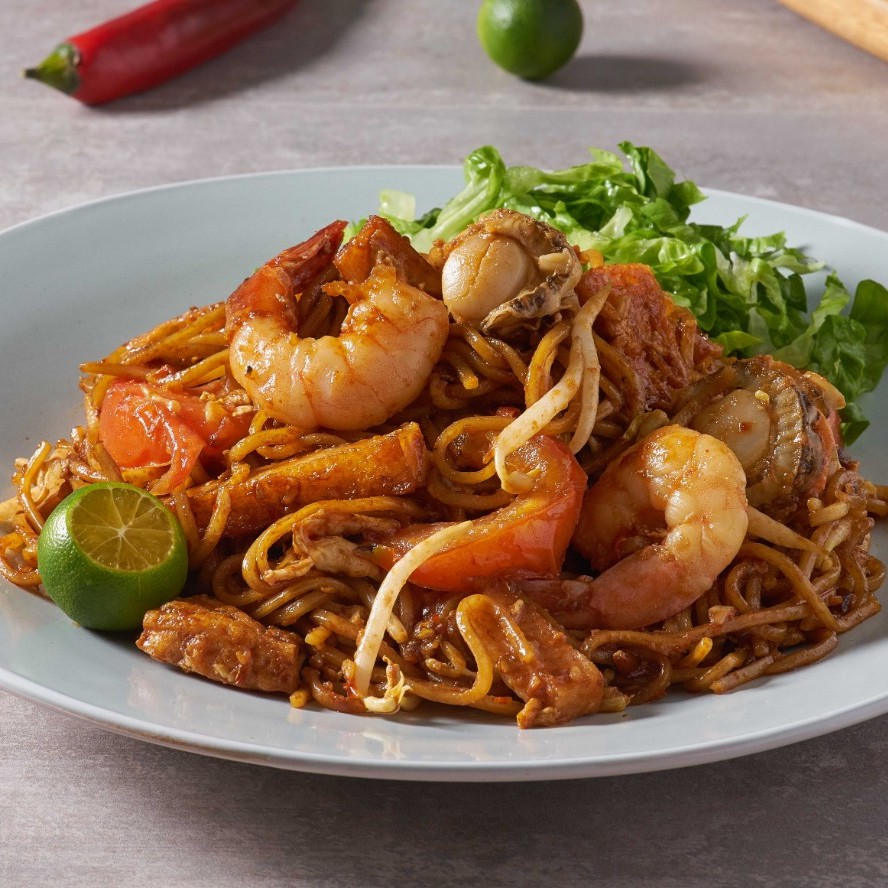

SINGAPORE LAKSA RM13.00 The deliciously fragrant singapore laksa is flavoured with special in-house creation of shrimp paste, lengkuas, chillies and polygonum leaves.
THAI STYLE FRIED RICE RM17.00 This is an old thai recipe. Thai style fried rice with fresh shrimp and shrimp paste. Served with tiger prawns and fresh salad.
SPECIAL SEAFOOD MEE RM15.00 An authentic malaysian dish with noodles, 'taufu pok', fish cake, egg, baby scallops, shrimp carefully cooked in a sweet and spicy sauce with julienned lettuce.